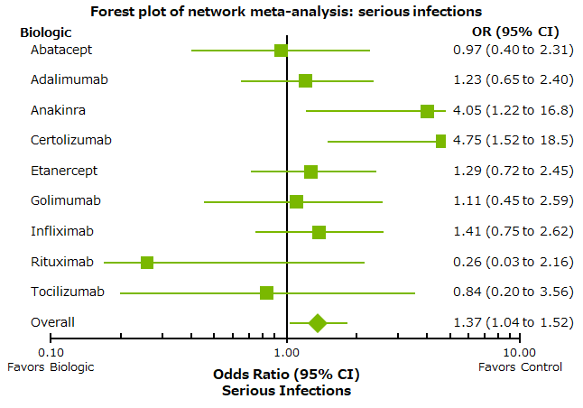

left
社外秘 研修資料
right
コクランデータベースによる重篤感染症頻度は同等
目的：
生物学的製剤9製剤について副作用重症度の比較
方法：
48,676例の160無作為化比較試験(RCTs)および11,954例の46オープンラベル継続試験(OLEs)の結果を解析
総有害事象、有害事象による投与中止、重篤な感染症等について統計的な有意差を対照群と比較した。

どのBIOでも重篤感染症発現率に違いはない
Cochrane Database Syst Rev. 2011 Feb 16;(2)